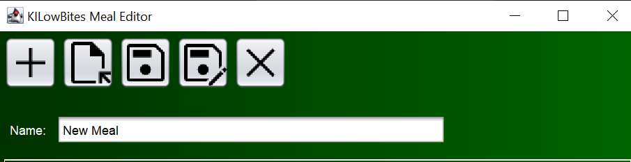

Kitchintel is a food management program to make building meals and making meals easier for the average proffesional. it gives you the ability to see and print a perfect step by step recipe and meal, calculate the calories in a meal, And make your own meal from scratch.
;The editors are used to make recipes and those recipes come together to make a final meal
The Recipe Editor allows you to make your own recipe with any given utensils and ingredients while also being able to make your own steps for said recipe
There are a multitude of buttons in the recipe editor to use. The left most button is the new button that allows the user to make a new recipe in another window. The next button is the open button that allows the user to choose a recipe file to edit and look at. The next button is the save button that will save only if it has been saved previously. The next button is the save as option allowing you to save the file to any name the user picks. the last and final button is simply the exit button to exit the editor.

To make a utensil correctly the user must insert a name of the utensil along with a optional details field to describe the utensil in more detail, then the User would press the add button once all fields required are filled out
To make a ingredient the user must fill all required fields which include a name of the ingredient which can be manually typed or chosen from the default selection, the user must also input the amount of the ingredient to be used in the recipe with a detail field that is optional to describe said ingredient, finally after the fields are filled the user must hit the add button to create the ingredient. if the user wants to input a embedded recipe upon a ingredient the user highlights the specified ingredient and presses add embedded recipe button shown to the right of the image below
If the user makes a ingredient that is not in the default list of ingredients the user will have to use the additional ingredients menu to make it, which will require the user to fill the previous required fields along with two more fields, calories, and the density of the ingredient being added

For the user to make steps you must meet three required fields, the action field explaining the action being taken, the ON field to determine whether this action is from what ingredient or utensil to the other, and the utensils field to show where the action is taking place whether it be a plate or a countertop. The final thing the user must do is to hit the add button to finalize the step in the recipe.
The Meal Editor allows you to make your own meal out of previous recipes made
The first leftmost button is the new button to instantiate a new meal, then there is the open button to open a previous meal to work on or just display, the next button is the save button that will save a previously saved meal if changes have been made, the next button is the save as button for saving new meal files with any name chosen by the user, the final button would be the close button to exit the meal editor.
for the user to make a meal they must use the add recipe button showed below to add together multiple recipes to conclude to one meal.
The search Utilities allow the user to find files of Recipes or meals that the user has created

The Recipe Searcher allows the user to search for recipe files
To search for recipes simply type in the text box above for the file name
wanted and the searcher will display all recipe files based on whats typed in the box
If the user wants to access the files displayed you have to double click the file name displayed
The Meal Searcher allows the user to search for meal files
To search for meals type in the text box above for the file name wanted and
the searcher will display all meal files based on whats typed in the text box
If the user wants to access the files displayed you just have to double click the file
name displayed
To use the shopping list the user must open and load a recipe or meal file using the button below
Once file is loaded it will display the ingrediens needed and how many people the current recipe serves
To use the print function press the button below
An example of what will be printed out after hitting the print button
the process viewer gives the users a quality of life illustration of the Recipe instructions and steps given a previous recipe made
To view a recipe in the process viewer the user must hit the load recipe or meal button and load the designated recipe or meal
After loading the recipe or meal the process viewer should look something like this
Press the print button below to get printing options
example of printed process viewer below
The tools for this program include a unit converter to convert certain units to a different unit and the Calorie calculator to determine the amount of calories are in a certain ingredient
To use the calorie calculator you must choose the designated ingredient, the amount, and the units. After inserting all the information you will click the calculate button shown below
If the user would like to reset any information you may hit the reset button shown below
If a user wants to determine how much teaspoons of a ingredient is in a tablespoon
the unit converter allows the user to calculate the exact amount with ease
To use the converter the user must set a from and to unit along with a ingredient, lastly
a beginning amount is needed. Then the user must hit the calculate button to get the wanted
units value
The user also has the option to reset all user inputted values by clicking the reset button below
The shortcuts and preferences allow the user to set their own shortcuts to open and use different tabs in the program
To set the preferences in this tab the user must use the drop downs to pick and choose a shortcut for each option in the menu, and once the user chooses a shortcut he must hit the save button as displayed below
The shortcuts tab displays the current shortcuts for the user as displayed above
And to get to the User Guide, You look in Help tab :D